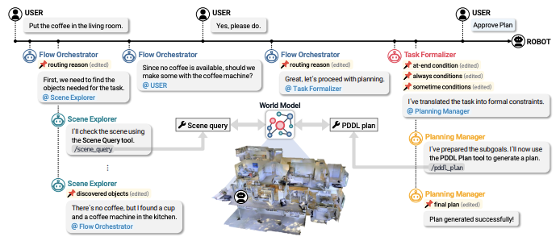
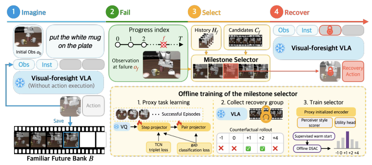

Juwon Kim
I'm a master's student in Artificial Intelligence at Seoul National University, advised by Prof. Byoung-Tak Zhang in the Biointelligence Lab, which I joined after a research internship.
My research focuses on robot learning. I started with high-level task planning and have since moved toward action policies such as vision-language-action (VLA) models. I'm currently studying reinforcement learning, and I'm particularly interested in modular VLAs, dexterous manipulation, memory, and lifelong learning for robots.
Previously, I received my B.S. in Mechanical Engineering from Yonsei University, where I was an undergraduate researcher in the MLCS Lab under Prof. Jongeun Choi.
News
- Sep 2026 OntoPlan was accepted to NeurIPS 2026, to be presented in December.
- Sep 2026 Back to the Familiar Future was accepted to CoRL 2026, to be presented in November.
- Sep 2026 Started my M.S. in Artificial Intelligence at SNU in the Biointelligence Lab.
- Aug 2026 Received my B.S. in Mechanical Engineering from Yonsei University.
- Jul 2026 Back to the Familiar Future was accepted to the RSS 2026 Workshop on Failure Recovery.
- Jun 2026 Back to the Familiar Future is on arXiv.
Publications


Back to the Familiar Future: Failure Recovery for VLA Policies via Pre-Imagined Milestone Selection
CoRL 2026
RSS 2026 Workshop on Failure Recovery
† Corresponding author